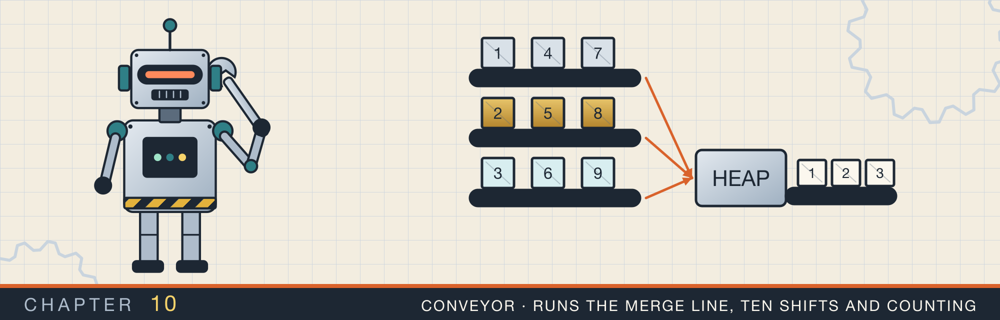
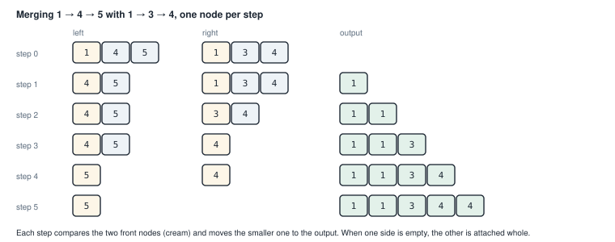
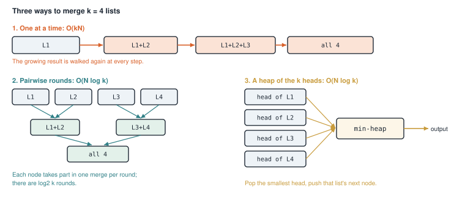
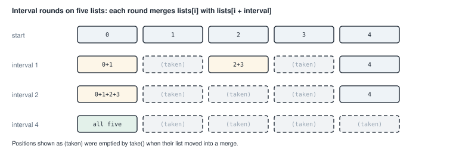

Merging k sorted lists
This chapter covers
- Merging two sorted linked lists by moving nodes, not copying values
- Three strategies for merging many lists, and why two of them are much faster than the third
- A merge that swaps two lists by value, so that only one mutable reference remains
- Borrowing two elements of one
Vecat the same time withsplit_at_mut - A heap of list heads, and a recursion on halves
Merging k sorted singly linked lists containing N total nodes into a single ordered sequence is a core primitive in external merge sort, log-structured merge-tree (LSM) compaction, and distributed query execution. Merging two sorted lists requires a single linear scan, whereas scaling to k lists exposes a sharp algorithmic trade-off: folding the lists sequentially forces early nodes to be revisited up to k times (O(kN) work), while balanced divide-and-conquer reduction and binary min-heap selection both achieve the optimal O(N log k) bound under different auxiliary-memory, call-stack, and cache-locality profiles.
Implementing these strategies in Rust also stresses ownership and borrowing directly: rather than cloning node payloads, each variant transfers ownership of Box<Node> handles in place, using disjoint slice borrows (split_at_mut) for divide-and-conquer reduction and an O(k) BinaryHeap of active list heads for heap-guided selection. Appendix C preserves an expanded reference study covering eleven variants.
10.1 Merging two sorted lists
Every pairwise strategy in this chapter relies on merging two sorted lists: compare their front nodes, move the smaller node to the tail of the output list, repeat until one list is exhausted, and attach the remaining list intact (Figure 10.1).

With linked lists, moving a node to the output does not copy its payload; it detaches the node from the front of its source list and links it to the tail of the output list.
10.2 Three strategies for k lists
Three primary strategies extend two-list merging to k lists, as illustrated in Figure 10.2.

Sequential accumulation. Merge list 2 into list 1, then list 3 into the accumulated result, and so on. Because each merge traverses the entire accumulated prefix, elements from the earliest lists are visited up to k − 1 times, yielding O(kN) total work.
Pairwise tournament rounds. Merge lists in disjoint pairs across successive rounds. Each round halves the number of active lists (k/2, k/4, …, 1), and every node participates in exactly one merge per round. Across ⌈log₂ k⌉ rounds, total work is O(N log k).
Min-heap of list heads. Insert the head of each non-empty list into a min-priority queue of size at most k. Repeatedly extract the minimum head, append it to the output tail, and push its successor from the same source list. Because each of the N nodes undergoes one push and one pop at O(log k) cost, total time is O(N log k).
Animation 10.1 compares total node moves across eight lists of three nodes each, contrasting pairwise rounds against sequential merging.
For 100 lists of 10,000 nodes each (N = 1,000,000), sequential merging performs roughly 100 million node visits, whereas an O(N log k) strategy performs roughly 7 million.
The pairwise strategy admits a compact in-place formulation that stores the lists in a Vec and merges positions separated by a doubling interval (Figure 10.3), named gap in Section 10.3.

lists[0].In each round, slot i absorbs slot i + interval as i advances by 2 * interval (0, 2 × interval,
4 × interval, …). Any unpaired trailing list (such as index 4 here) remains untouched until interval grows
large enough to pair it with index 0.
10.3 Merging with the lists swapped by value
The merge constructs its output behind a stack-allocated sentinel node (the dummy head), eliminating special
casing for the first output element. A mutable cursor tail tracks the last appended node at all times
(Figure 10.4).

tail always points at the last node, where the next one is attached.The function merge_two takes both lists by value. Whenever the right list has the smaller front node, the two bindings are swapped so left always holds the next node to detach. Maintaining tail as the sole mutable reference simplifies borrow tracking and keeps the loop concise.
Listing 10.1 The node type and merge_two (lines 4 to 27). src/bin/merge_k_sorted_lists_owned.rs
type Link = Option<Box<Node>>;
struct Node {
val: i32,
next: Link,
}
/// Merge two sorted lists. O(n) time, O(1) extra memory.
fn merge_two(mut left: Link, mut right: Link) -> Link {
let mut dummy = Box::new(Node { val: 0, next: None });
let mut tail = &mut dummy;
while let (Some(l), Some(r)) = (&left, &right) {
if r.val < l.val {
(left, right) = (right, left); // left now holds the smaller front
}
let mut node = left.unwrap(); // safe: checked by while let
left = node.next.take();
tail = tail.next.insert(node);
}
tail.next = left.or(right);
dummy.next
}The loop condition while let (Some(l), Some(r)) = (&left, &right) executes while both lists remain non-empty,
borrowing &left and &right immutably solely to compare the two front keys.
Whenever the right head is strictly smaller, (left, right) = (right, left) exchanges the two Option bindings
by value without touching heap nodes or introducing extra references. After this normalization step, left
invariantly holds the minimum head.
Calling left.unwrap() moves the Box<ListNode> out of left (infallible because the while let guard
established Some). node.next.take() detaches the tail and restores it to left, isolating the front node.
Calling tail.next.insert(node) links the detached node onto the output tail and returns a &mut Box<ListNode>
reference to it, advancing tail in a single expression.
Once either input is exhausted, left.or(right) selects the remaining non-empty suffix and attaches it directly
to tail.next in O(1) time.
Animation 10.2 traces merge_two line by line alongside ownership and borrow state, concluding with a
borrow-checker error when l is read after the tuple swap.
merge_two line by line. l and r borrow the front nodes until the comparison. unwrap moves the list into node, and take returns the rest to left. tail is the only mutable reference. Reading l after the swap does not compile.Trace the merge of 1 → 4 with 2 → 3 → 5:
| Pass | left | right | Swap? | Node moved | Output after dummy |
|---|---|---|---|---|---|
| 1 | 1 → 4 | 2 → 3 → 5 | no | 1 | 1 |
| 2 | 4 | 2 → 3 → 5 | yes: 2 < 4 | 2 | 1 → 2 |
| 3 | 3 → 5 | 4 | no | 3 | 1 → 2 → 3 |
| 4 | 5 | 4 | yes: 4 < 5 | 4 | 1 → 2 → 3 → 4 |
| 5 | None | 5 | the loop ends; or attaches 5 | 1 → 2 → 3 → 4 → 5 |
Each iteration moves exactly one node, so merging n nodes executes in O(n) time and O(1) auxiliary space, requiring only the single stack-allocated sentinel node.
Listing 10.2 merge_k (lines 29 to 47).
/// Merge k sorted lists in place: round 1 merges lists 1 apart, round 2 lists
/// 2 apart, and so on. O(N log k) time, O(1) extra memory.
fn merge_k(mut lists: Vec<Link>) -> Link {
if lists.is_empty() {
return None;
}
let size = lists.len();
let mut gap = 1;
while gap < size {
let mut i = 0;
while i + gap < size {
lists[i] = merge_two(lists[i].take(), lists[i + gap].take());
i += gap * 2;
}
gap *= 2;
}
lists[0].take()
}merge_k implements the doubling-interval schedule of Figure 10.3: the outer loop doubles gap each round, while
the inner loop advances i by gap * 2 and merges lists[i] with lists[i + gap]. Calling lists[i].take()
extracts each owned list and leaves None in its slot so merge_two receives two owned heads.
Animation 10.3 traces this merge and demonstrates the node drop caused by omitting left.or(right) after the loop.
left always holds the next node. When one list runs out, or attaches the other. Without that line, the nodes left in right are dropped.$ cargo run --bin merge_k_sorted_lists_owned
[0, 1, 2, 3, 4, 5, 6, 7, 8, 9]
[1, 1, 1, 3, 5]
[]
The complete program is listing 10.5 at the end of the chapter.
10.4 Borrowing two elements of one Vec
merge_k moves both lists out of the vector before the call. A merge that takes two &mut lists instead cannot be
called on two slots of the same vector:
merge_two(&mut lists[i], &mut lists[i + gap]) // does not compileBoth &mut expressions borrow the entire Vec, violating Rust’s aliasing rule that prohibits simultaneous mutable
borrows of the same container; the borrow checker does not perform index-disjointness analysis on slice indexing.
Calling lists.split_at_mut(i + gap) partitions the vector at index i + gap into two statically disjoint
mutable slices, returning (&mut [..], &mut [..]). Listing C.1 in Appendix C employs this pattern:
let (left, right) = lists.split_at_mut(i + interval);
left[i] = Self::merge_two(&mut left[i], &mut right[0]);Because left[i] and right[0] belong to disjoint slices, the borrow checker permits both mutable references
simultaneously. Section 10.6 applies split_at_mut recursively to bisect a slice of lists.
10.5 A heap of list heads
The min-heap strategy of Figure 10.2 stores (front_value, list_index) pairs wrapped in Reverse inside a
BinaryHeap. Indexing lists by usize rather than placing Box<ListNode> directly in the heap leaves nodes
anchored in lists and eliminates the need to implement Ord on ListNode.
Listing 10.3 merge_k_lists (lines 10 to 33). src/bin/merge_k_sorted_lists_heap.rs
fn merge_k_lists(mut lists: Vec<Link>) -> Link {
let mut heap = BinaryHeap::new();
for (i, list) in lists.iter().enumerate() {
if let Some(node) = list {
heap.push(Reverse((node.data, i)));
}
}
let mut dummy = Box::new(ListNode {
data: 0,
next: None,
});
let mut tail = &mut dummy;
while let Some(Reverse((_, i))) = heap.pop() {
let mut node = lists[i].take().unwrap();
lists[i] = node.next.take();
if let Some(next) = &lists[i] {
heap.push(Reverse((next.data, i)));
}
tail = tail.next.insert(node);
}
dummy.next
}Each iteration performs four steps:
- Pop the minimum
Reverse((val, i))pair, identifying the source listi. - Detach the front node from
lists[i]and write its successor back intolists[i]. - If
lists[i]remains non-empty, push its new front value paired withionto the heap. - Append the detached node to the output tail via
tail.next.insert(node).
Because Rust compares tuples lexicographically, equal front values break ties deterministically in favor of the lower-indexed list, making the merge stable across input order.
Because the heap holds at most one element per source stream (k entries total), this design generalizes directly to external k-way merge over disk-backed sorted runs where only the current record of each file resides in RAM.
$ cargo run --bin merge_k_sorted_lists_heap
1 1 2 3 4 4 5 6
The complete program is listing 10.6 at the end of the chapter.
10.6 Recursion on halves
This version merges from the top down. It splits the lists into two halves, merges each half recursively, and
merges the two results. Its node holds an i32 named val, and List is the alias for a whole list:
#[derive(Debug)]
struct ListNode {
val: i32,
next: Option<Box<ListNode>>,
}
type List = Option<Box<ListNode>>;Listing 10.4 The merge and the recursion on a slice (lines 11 to 34). src/bin/merge_k_sorted_lists_halves.rs
fn merge(a: List, b: List) -> List {
match (a, b) {
(None, rest) | (rest, None) => rest,
(Some(mut left), Some(mut right)) => {
if left.val > right.val {
mem::swap(&mut left, &mut right);
}
left.next = merge(left.next.take(), Some(right));
Some(left)
}
}
}
fn merge_k_slice(lists: &mut [List]) -> List {
match lists.len() {
0 => None,
1 => lists[0].take(),
_ => {
let mid = lists.len() / 2;
let (left_half, right_half) = lists.split_at_mut(mid);
merge(merge_k_slice(left_half), merge_k_slice(right_half))
}
}
}The base arm (None, rest) | (rest, None) => rest returns the remaining list intact when either input is empty.
In the recursive arm, mem::swap normalizes left to hold the smaller head, retains that node at the front, and
recursively assigns left.next to the merge of the tail of left with right. Ownership transfers across
existing Box allocations with zero heap allocation.
merge_k_slice operates over a mutable slice &mut [List], bisecting it in O(1) space via split_at_mut without
allocating intermediate vectors.
Because merge recurses once per output node, the final merge reaches a call-stack depth of O(N) frames,
overflowing an 8 MiB main-thread stack at approximately 260,000 to 270,000 nodes. Production workloads with
unbounded N therefore require the iterative merge of Section 10.3.
$ cargo run --bin merge_k_sorted_lists_halves
Input lists:
[1 -> 4 -> 5]
[1 -> 3 -> 4]
[2 -> 6]
Merged list:
[1 -> 1 -> 2 -> 3 -> 4 -> 4 -> 5 -> 6]
The complete program is listing 10.7 at the end of the chapter.
10.7 The three programs side by side
In the table, N is the total number of nodes and k the number of lists. The extra memory column counts memory
beyond the input Vec and the nodes. The stack column is the deepest the call stack goes, in frames.
| Program | Strategy | Time | Extra memory | Stack | Allocations | How a merge moves nodes |
|---|---|---|---|---|---|---|
merge_k_sorted_lists_owned | gap rounds | O(N log k) | O(1) | O(1) | one dummy node per merge | lists swapped by value, so tail is the only &mut |
merge_k_sorted_lists_heap | heap of heads | O(N log k) | O(k) | O(1) | one dummy node | list numbers in the heap, Option::insert |
merge_k_sorted_lists_halves | recursive halves | O(N log k) | O(1) | O(N) | none | split_at_mut, recursive merge |
- Time. Each node moves about log₂ k times: O(N log k). The “one at a time” strategy of figure 10.2 would be O(kN).
- Extra memory. The heap holds one entry per list: O(k). The other two programs reuse the input
Vec. - Stack. The recursive merge makes one call per node of its output, so its stack reaches O(N) frames. The loop and the heap use a fixed number of frames.
- Allocations. The gap rounds allocate one dummy node per merge, k - 1 in total. The recursive merge allocates nothing.
10.8 The complete files
Listing 10.5 Gap rounds with the lists swapped by value. src/bin/merge_k_sorted_lists_owned.rs
//! Merge k sorted lists: the gap loop, and a merge that swaps the two lists by
//! value so that `left` always holds the smaller front node.
type Link = Option<Box<Node>>;
struct Node {
val: i32,
next: Link,
}
/// Merge two sorted lists. O(n) time, O(1) extra memory.
fn merge_two(mut left: Link, mut right: Link) -> Link {
let mut dummy = Box::new(Node { val: 0, next: None });
let mut tail = &mut dummy;
while let (Some(l), Some(r)) = (&left, &right) {
if r.val < l.val {
(left, right) = (right, left); // left now holds the smaller front
}
let mut node = left.unwrap(); // safe: checked by while let
left = node.next.take();
tail = tail.next.insert(node);
}
tail.next = left.or(right);
dummy.next
}
/// Merge k sorted lists in place: round 1 merges lists 1 apart, round 2 lists
/// 2 apart, and so on. O(N log k) time, O(1) extra memory.
fn merge_k(mut lists: Vec<Link>) -> Link {
if lists.is_empty() {
return None;
}
let size = lists.len();
let mut gap = 1;
while gap < size {
let mut i = 0;
while i + gap < size {
lists[i] = merge_two(lists[i].take(), lists[i + gap].take());
i += gap * 2;
}
gap *= 2;
}
lists[0].take()
}
fn build(values: &[i32]) -> Link {
let mut head = None;
for &val in values.iter().rev() {
head = Some(Box::new(Node { val, next: head }));
}
head
}
fn to_vec(mut current: Link) -> Vec<i32> {
let mut out = Vec::new();
while let Some(node) = current {
out.push(node.val);
current = node.next;
}
out
}
fn main() {
let lists = vec![
build(&[1, 4, 7]),
build(&[2, 5, 8]),
build(&[0, 3, 6, 9]),
None,
];
println!("{:?}", to_vec(merge_k(lists))); // [0, 1, 2, 3, 4, 5, 6, 7, 8, 9]
println!(
"{:?}",
to_vec(merge_k(vec![build(&[1, 1, 5]), build(&[1, 3])]))
); // [1, 1, 1, 3, 5]
println!("{:?}", to_vec(merge_k(vec![]))); // []
}
#[cfg(test)]
mod tests {
use super::*;
#[test]
fn merges_two_lists_keeping_duplicates() {
let merged = merge_two(build(&[1, 1, 5]), build(&[1, 3]));
assert_eq!(to_vec(merged), vec![1, 1, 1, 3, 5]);
}
#[test]
fn merges_with_empty_lists() {
assert_eq!(to_vec(merge_two(None, build(&[2, 4]))), vec![2, 4]);
assert_eq!(to_vec(merge_two(build(&[2, 4]), None)), vec![2, 4]);
assert!(merge_two(None, None).is_none());
assert!(merge_k(vec![]).is_none());
assert!(merge_k(vec![None, None]).is_none());
}
#[test]
fn merges_an_odd_number_of_lists() {
let five = vec![
build(&[9]),
build(&[1, 5]),
build(&[3]),
build(&[2, 8]),
build(&[4]),
];
assert_eq!(to_vec(merge_k(five)), vec![1, 2, 3, 4, 5, 8, 9]);
}
#[test]
fn merges_many_long_lists() {
let lists: Vec<Link> = (0..7)
.map(|k| {
build(
&(0..100)
.map(|i| i * 7 + k)
.collect::<Vec<_>>(),
)
})
.collect();
let expected: Vec<i32> = (0..700).collect();
assert_eq!(to_vec(merge_k(lists)), expected);
}
}Listing 10.6 A heap of list heads. src/bin/merge_k_sorted_lists_heap.rs
use std::{cmp::Reverse, collections::BinaryHeap};
struct ListNode {
data: u32,
next: Option<Box<ListNode>>,
}
type Link = Option<Box<ListNode>>;
fn merge_k_lists(mut lists: Vec<Link>) -> Link {
let mut heap = BinaryHeap::new();
for (i, list) in lists.iter().enumerate() {
if let Some(node) = list {
heap.push(Reverse((node.data, i)));
}
}
let mut dummy = Box::new(ListNode {
data: 0,
next: None,
});
let mut tail = &mut dummy;
while let Some(Reverse((_, i))) = heap.pop() {
let mut node = lists[i].take().unwrap();
lists[i] = node.next.take();
if let Some(next) = &lists[i] {
heap.push(Reverse((next.data, i)));
}
tail = tail.next.insert(node);
}
dummy.next
}
fn main() {
let mut lists = Vec::new();
for values in [vec![1, 4, 5], vec![1, 3, 4], vec![2, 6]] {
let mut head = None;
for data in values.into_iter().rev() {
head = Some(Box::new(ListNode { data, next: head }));
}
lists.push(head);
}
let mut cur = merge_k_lists(lists);
while let Some(node) = cur {
print!("{} ", node.data);
cur = node.next;
}
println!();
}Listing 10.7 Recursion on halves. src/bin/merge_k_sorted_lists_halves.rs
use std::mem;
#[derive(Debug)]
struct ListNode {
val: i32,
next: Option<Box<ListNode>>,
}
type List = Option<Box<ListNode>>;
fn merge(a: List, b: List) -> List {
match (a, b) {
(None, rest) | (rest, None) => rest,
(Some(mut left), Some(mut right)) => {
if left.val > right.val {
mem::swap(&mut left, &mut right);
}
left.next = merge(left.next.take(), Some(right));
Some(left)
}
}
}
fn merge_k_slice(lists: &mut [List]) -> List {
match lists.len() {
0 => None,
1 => lists[0].take(),
_ => {
let mid = lists.len() / 2;
let (left_half, right_half) = lists.split_at_mut(mid);
merge(merge_k_slice(left_half), merge_k_slice(right_half))
}
}
}
fn create_list(arr: &[i32]) -> List {
let mut head = None;
let mut tail = &mut head;
for &val in arr {
*tail = Some(Box::new(ListNode { val, next: None }));
if let Some(node) = tail {
tail = &mut node.next;
}
}
head
}
fn print_list(mut list: &List) {
let mut elements = Vec::new();
while let Some(node) = list {
elements.push(node.val.to_string());
list = &node.next;
}
println!("[{}]", elements.join(" -> "));
}
fn main() {
let mut lists = vec![
create_list(&[1, 4, 5]),
create_list(&[1, 3, 4]),
create_list(&[2, 6]),
];
println!("Input lists:");
for list in &lists {
print_list(list);
}
let merged = merge_k_slice(&mut lists);
println!("\nMerged list:");
print_list(&merged);
}Summary
- Merging two sorted linked lists transfers the smaller head to the output tail in O(a + b) time and O(1) auxiliary space.
- Sequential accumulation costs O(kN), whereas both pairwise tournament rounds and a min-heap of list heads achieve O(N log k).
- Swapping owned
Option<Box<ListNode>>bindings by value normalizes the minimum head intoleft, leavingtailas the sole mutable borrow. Option::insertlinks a node ontotail.nextand returns a mutable reference to the inserted node in a single operation.slice::split_at_mutpartitions aVecinto statically disjoint mutable slices, enabling simultaneous mutable borrows of distinct elements.- A min-heap of
(value, list_index)pairs requires O(k) auxiliary space and generalizes directly to external streaming merges from disk. - Recursive two-way merging requires zero heap allocations but consumes O(N) call-stack frames, risking stack overflow on large inputs.
Exercises
- Write the “one at a time” merge and time it against listing 10.5 on 200 lists of 5,000 nodes each.
- Make
merge_twofrom listing 10.1 generic over anyT: Ord. - Write a k-way merge of sorted text files with the heap strategy, keeping only one line per file in memory.
- Rewrite
mergefrom listing 10.4 as a loop with the swap of listing 10.1. Test it on two lists of a million nodes each.